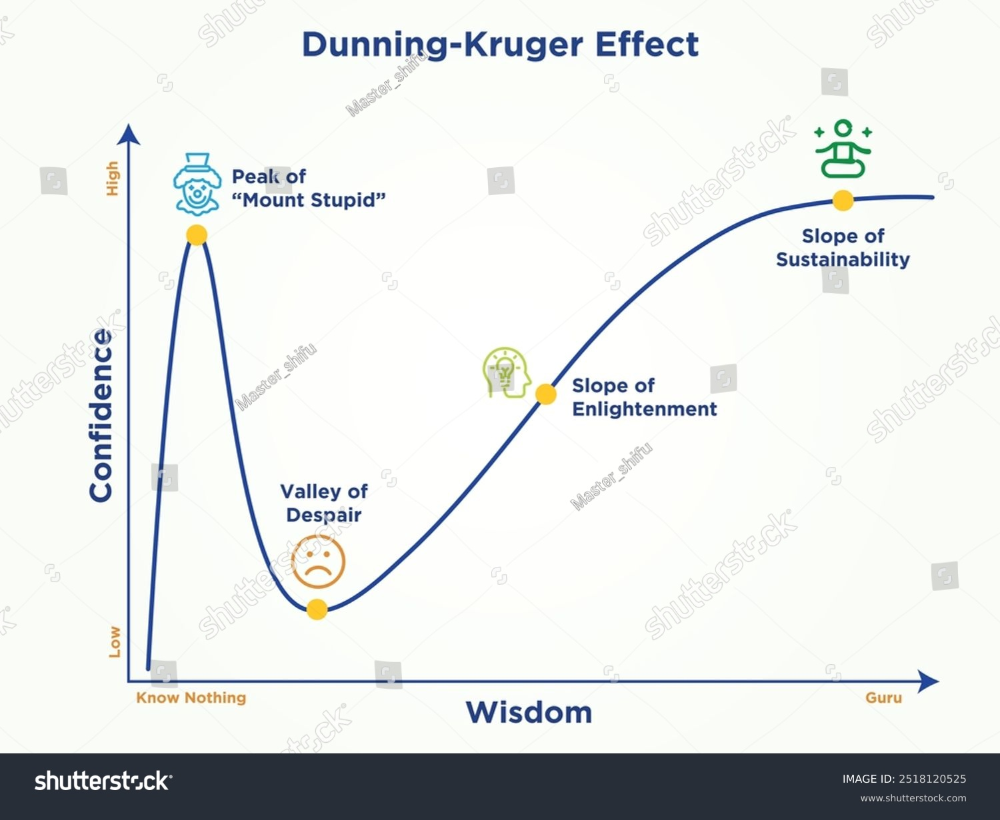
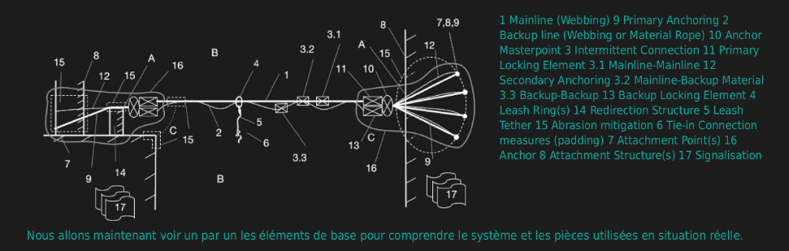

Principes, fondamentaux et sécurité
Rigging de Highline
Fondements et principes théoriques / pratiques
Nous exposerons sur cette page des fondamentaux theoriques et pratiques sur l'installation de highline , Traduction française librement inspirée de la conférence originale en espagnol par Rosendo Casarrubias, faire défiler la page ou utiliser les liens du sommaire pour aller directement à une section
Conférence originale complète en espagnol 2024
Rigger et instructeur de rigging ISA
A CONSULTER : Diapos traduites par IA : Rigging de Highline FR(IA)
Notes synthétiques de l'oral de la conférence en francais (IA peut contenir des erreurs)
Instagram : @r.o.cas Si te gustaría ver más contenido de este tipo considera donarme: PayPal: @rosendisho / ro.cas.highline@gmail.com Patreon: patreon.com/SlacklineMX Youtube : SlacklineMX
Avis de non-responsabilité
Le contenu présenté ici NE constitue PAS un guide complet pour réaliser un rigging de highline en conditions réelles, mais un guide d’orientation pour comprendre les aspects théoriques de sécurité qui encadrent cette pratique.
Il n’est recommandé à aucun débutant, ni à aucun groupe de débutants, de se lancer seul dans cette activité sans avoir au préalable bénéficié des conseils de personnes expérimentées, ainsi que d’une pratique et d’une expérience préalables, avant de se risquer à faire un rigging par ses propres moyens.
Les personnes intéressées sont également invitées à continuer de se former par leurs propres moyens et à construire une base de connaissances et de jugement plus solide avant de considérer qu’elles ont les compétences nécessaires pour le réaliser.
Gardez toujours en tête l’effet “Dunning-Kruger”, aussi appelé effet de surconfiance, qui est un mécanisme cognitif par lequel les personnes les moins qualifiées d’un groupe tendent à surestimer leur compétence dans un domaine.
Il est attribué à une difficulté métacognitive des personnes non qualifiées qui les empêche de reconnaître exactement leur niveau de compétence/incompétence et d’évaluer leurs réelles capacités.

De nombreux aspects et détails techniques ne seront pas abordés ici et sont pourtant cruciaux pour réaliser une installation correcte. Rien ne remplace l’entrainement et la formation continue auprès de personnes expérimentés.
Notamment nous ne parlerons pas des conséquences du vent, du traffic dans l’espace aérien et de ses conditions d’ocupations, des reglementations locales pouvant s’appliquer en défense de l’environnement,des installations sur bungees,de l’installation des points d’ancrages des sangles longues,et certains détails seront omis, on essayera de mettre en lien au maximum de ressources externes pertinentes sur les sujets non traités
Gardez en tête que les technique et les pratiques évoluent , ce qui est acceptable aujourd’hui pourrait ne plus l’être demain si le matériel ou nos standards changent.
Remember! When rigging a highline, always account for the possibility of a mainline failure. Have a plan for how to rescue an injured or unconscious highliner and keep all necessary rescue equipment on hand.
Qu’est-ce que le rigging de Highline ?
La HIGHLINE est l’activité qui consiste à pratiquer la slackline en hauteur.
La highline peut aussi être comprise comme un système installé entre deux structures (ou plus), utilisé pour s’équilibrer, jouer ou se déplacer.

Le RIGGING DE HIGHLINE ( ou gréement en français dans le texte) est le processus par lequel on installe une sangle (« slackline ») en hauteur.
Comme il s’agit d’une activité à haut risque, la highline a une longue histoire d’évolution, au cours de laquelle on a cherché à augmenter, affiner et rendre plus efficace la sécurité du système, afin de pouvoir pratiquer l’activité en toute sécurité même dans les scénarios où l’équipement ou une partie du système viendrait à faillir.
Savoir faire du rigging de highline implique donc de pouvoir réaliser une installation sûre, avec une compréhension approfondie de tous les éléments qu’une ligne doit réunir pour être sûre, ainsi que des critères qui permettent d’évaluer une installation afin de déterminer si elle est sûre ou non.
Highline – Les 10 points les plus importants
Les 10 points importants en Highline par swiss-slackline
Les 10 points suivants ont été rédigés dans le but de limiter les blessures et les accidents causés par des erreurs pendant le montage ainsi que durant la traversée d’une highline.
Ensemble des publications de l’ISA sur la highline
Maximes du bon rigger
Connaître la théorie ne garantit pas d’être un bon rigger, mais tout bon rigger connaît la théorie.
Un bon rigger est celui qui fait passer sa propre sécurité et celle de son équipe avant la réalisation d’une installation
Dans cette même logique, un bon rigger n’est pas seulement celui qui sait réaliser une installation sûre, mais aussi celui qui reste en sécurité pendant qu’il la réalise.
Un bon rigger est celui qui sait reconnaître quand les conditions (météo, disponibilité du matériel, état des points d’ancrage, expérience des personnes impliquées, état physique et mental) ne sont pas adaptées pour poursuivre le rigging, et qui est capable de le signaler et d’arrêter avant qu’un incident ne se produise.